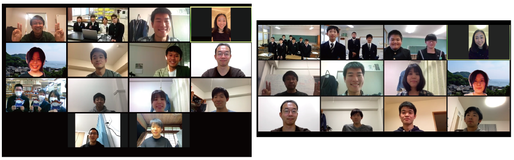

活動概要
活動の進め方（詳細とポイント）
慣れ親しんだ地域の地形や歴史，地域の人々の声から学び，南海トラフ地震が起きた場合に課題となることは何か，自分たちに今何ができるかについて，宇和海３地区，松山，今治の２島をつなぎ，議論を交わします．地域の方や家族への過去の災害に関するインタビュー，同級生へのアンケート，通学中の気づきなど，地元に住んでいる高校生だからこその視点を生かして事前復興プランを考えます．
演習資料
復興学習
石巻がれき処理：
宮城県石巻市は東日本大震災で甚大な被害を受け，かつて北上川の水運で栄えた港町は一面の災害廃棄物に覆い尽くされました．終わりの見えないがれき処理業務の先頭に立ち，被災されたの作業員の方々とともに約3年にも及ぶ大事業を完了させた伊藤さんに，当時の様子と復興への思いを伺いました．
↓インタビュー動画はこちらから
復興学習アーカイブ取材協力：鹿島建設株式会社，一般社団法人 日本建設業連合会
分析方法
レイヤー分析：
都市を構成する諸要素をひとつずつレイヤーに写し取り，各要素や要素間の共時的・通時的な関係性を読み解くのがレイヤー分析です．本項ではレイヤー分析の概要と分析例を紹介しています．
↓レイヤー分析の説明と分析例の動画はこちらから
日程
| 日 | 形式 | 内容 | 配布資料 |
|---|
| 8/11(火) | 宇和海・松山 初回授業 | ガイダンスと敷地の議論
東日本大震災の復興や他地域の事前復興計画学習
復興に関する議論 | |
|---|
| 9/17(木) | 今治 初回授業 | ガイダンスと敷地の議論
東日本大震災の復興や他地域の事前復興計画学習
復興に関する議論 | |
|---|
| 9/27(日) | 宇和海・松山 第二回授業 | レイヤー分析の結果と議論 | 分析各地の旧版地形図 |
|---|
11/3(火)
11/8(日) | 宇和海・松山・今治合同
中間講評会 | 中間発表
各校の分析・調査内容のまとめ
事前復興に向けた着眼点と提案コンセプトの発表
各チームへのエスキース，議論 | |
|---|
| 12/5(土) | 復興デザイン会議 第2回全国大会
ポストコロナの都市像を描く | 防災地理部私たちのまちと事前復興を考える
| |
|---|
活動報告
第一回授業
8月11日参加校：愛光学園，宇和島東高校，三崎高校，八幡浜高校
9月17日参加校：今治北高校大三島分校，今治西高校伯方分校
8宇和海３地区と松山，今治の２島をZoomでつなぎ，防災地理部の活動を始動しました．東日本大震災の復興や他地域における事前復興計画を学び，復興に重要なことは何かをみんなで議論しました．
第二回授業
参加校：愛光学園，宇和島東高校，三崎高校，八幡浜高校
高校生のみなさんの出身地区や学校周辺地区を対象とし，大正，昭和，現在の地形図を見比べ，馴染み深い土地がどのように変化してきたのかの分析を行いました．時代を経るごとに埋立地が増えて液状化の危険性が増していること，高度経済成長期前後で幹線道路や伊方原子力発電所ができ，人口や地域間の移動，産業構造に変化があったことなど，多くの重要なことに気づいてくれました．
その後，事前復興計画を立てる上で注目したいことについて，地元の商店街や通学路にたくさんある空き家，険しい避難路など，高校生らしい視点での活発な議論が行われました．防災意識について同級生に独自にアンケートを行ってくれた高校もあり，意欲的な活動を行ってくれています．
中間講評会
11月3日参加校：愛光学園，宇和島東高校，今治北高校大三島分校
11月8日参加校：三崎高校，八幡浜高校，今治西高校伯方分校
レイヤー分析，過去の災害調査，地域の方へのインタビュー，学校アンケート，地質・地形調査，避難路現地調査など，地元の高校生だからこそできる調査手法で，各チームが災害に関する調査の報告を行いました．土砂災害や液状化の要因となる地形・地質的要因の調査から，人口減少・高齢化のために避難時や復興期の若い担い手が不足することを課題として見出すチームなど，熱心な調査と的確な問題設定がなされました．空き家の利活用して避難・復興拠点とする案，高台に宿泊施設を整備し非常時には避難拠点とする案，サイクリングロードとして避難路を日常的に活用していく案など，アイディアに富んだ計画案も発表されました．各チームに大学教授，大学生・大学院生，地元のラジオ局の方がコメントし，最終発表に向けたアドバイスを行いました．

最終発表＠復興デザイン会議第２回全国大会 防災地理部 私たちのまちと事前復興を考える
審査員
羽藤英二(審査委員長，東京大学), 佃悠(東北大学), 宮崎保通(復建調査設計), 益子智之(早稲田大学), 小関玲奈(東京大学)
各校の提案プラン
八幡浜高校八幡浜市街地チーム：やわらかい町をつくる 防災ヒミツキチとしての空き家利活用プラン
八幡浜高校八幡浜湊浦チーム：やわらかい町をつくる 避難路での防災教育とみかん倉庫・果樹園の事前復興的活用
宇和島東高校：商店街きさいやロードを復興の拠点に
三崎高校：LINK RING プロジェクト
愛光高校：意識が一番の防災
今治北高校大三島分校：多様な地域防災体制から考える自助・共助の重要性
今治西高校伯方分校：石切場の歴史と土砂崩れの関係性の発見
全体講評
審査委員長 羽藤英二（東京大学教授・復興デザイン全国大会実行幹事長）
防災地理部の活動は2020年から始まり、各地の高校生が、地域の地理的特性を丁寧に歩いて読み解き、調査と議論を繰り返してきました。5名の審査員が、地域性，専門性，伝達性（プレゼンテーション），復興デザインへの貢献度についてそれぞれ評価し、総合的に審査を行いました。過去の災害や地元の日々の暮らしに目を向け、災害の原因となる地形と地質の分析に取り組む。今治北高大三島分校と今治西伯方島分校は、土砂災害の原因となるマサ土の地層と石切り場の歴史を読み解き、そこから災害に対する理解に迫まりました。一方で宇和島東高校のように近世城下町宇和島藩における南海トラフ地震の史実と近代化による地域の構造を事前復興のアイデアに結びつけたチームもありました。愛光学園は、被災するであろう市民自身の意識に目を向け、災害に対して関心のない自分たち自身をアンケートによって炙り出しています。いずれも独自の視点に基づいて、防災と復興を考える上で、地理と私たちの間にある関係を読み解こうとしていたことを高く評価します。こうした理解をいかにして防災と事前復興のプランづくりにつなげていくか。八幡浜高校の湊浦チームは、集落の裏手にある避難道をみずから歩き、事前復興に向けた広報プランへ発展させました。三崎高校は動画を駆使し、佐田岬の旧道の可能性を見出しながら、発展的な事前復興のプランへとつなげています。地域にあるのは弱さだけではないから、地元の地域資源に目を向け、あらかじめ復興を始めることが求められます。八幡浜高校八幡浜チームは、地域の地形の中に在る空き家に目を向け、復興と日々の暮らしの拠点に見立て、事前復興を今から始められるプランを手を動かして作り上げました。丁寧な言葉で語られた地域像は、地元のみんなで描くことを期待できるものでした。私たちの日々の暮らしのそのいずれもが、空間の力を借りることなく十分な効果を期待することは難しい。地理と防災の学びを通じて、事前復興のプランづくりの活動に奮闘してくれた全ての皆さんの健闘を讃えます。
各講評
八幡浜高校八幡浜市街地チーム
八幡浜高校の２チームは多角的に地域の現状と課題を把握することにより、強度の高い提案を作成してくれました。特に八幡浜市街地チームは、地域が抱える空き家問題に対処し、通常は保護される存在の子どもたちが防災の主体となる一挙了得な提案である点が秀逸でした。被災シミュレーションや復興プロセスについても具体的で実現性が高いものとなっています。子どもたちを巻き込んだアクションプランの実現を期待しています。 （佃悠）
八幡浜高校八幡浜湊浦チーム
八幡浜高校湊浦チームは、人口減少・高齢化という難しい課題を抱える集落での事前復興に取り組んでくれました。決して現実を悲観するのでも、楽観するのでもなく、現地踏査等から現状を冷静に把握した上で、地域での生活と観光産業を両立して地域活性化させるという持続可能性の高い提案となっています。日本の多くの集落が抱えるこの難しい課題を解くリーディングプロジェクトとして、さらなる深化を期待しています。（佃悠）
宇和島東高校
宇和島東高校は、古地図を用いて城下町都市の形成過程を丹念に分析し、さらに津波浸水域を重ね合わせることで、発災時に商店街が抱える課題を明確に浮き彫りにしてくれました。このような都市スケールでの都市史と災害リスク評価を掛け合わせた分析だけではなく、計画提案を行う商店街を選定し、モノの流れに着目した独創的な事前復興デザインを提示してくれました。今後は、将来イメージの中に含まれていた１つ１つの建築計画のアイディアを商店街組合や周辺住民などと話し合いながら、具体化されることを期待しています。（益子智之)
三崎高校
三崎高校では、防災の視点で、生業である「観光」と「みかん」を再考し、関係人口の増加対策や拠点整備を行うことで災害に強いまちづくりを提起しています。また、空家を使った高齢者の生きがいづくりなど地域の意識啓発も忘れていません。防災とまちづくりは一体であることを再認識する機会となりました。今後は、まちの成り立ちや地勢等を深堀していただき、災害に強いまちづくりの実現へ向け、さらなる研究を期待しています。（宮崎保通)
愛光高校
愛光高校は、レイヤー分析による市街地の拡大とハザードマップを重ね合わせ、松山市に存在する災害リスクや避難所容量の不足を的確に指摘してくれました。また、中高校生にアンケートを取り、災害に対する意識の低さを明らかにしたことは大きな成果だったと思います。大学生コーチともSlackを通じて活発に議論を行いました。都市防災に関する鋭い視点と専門的な分析を生かし、周囲にも活動の輪を広げてくれることを期待しています。（小関玲奈)
今治北高校大三島分校
大三島分校は、役割を分担することで、様々な視点で調査でき、その結果、避難する際に多くのリスクが存在することを明らかにすることで、「自助の必要性」を課題として導き出しました。「命を守る」という点では、自助は非常に重要だと思います。「よくぞ導き出してくれた」とうれしく思います。今後は、地域の方々に自助を拡散いただきたいとのですが、できれば、その拡散の方法についても是非、研究いただければと思っています。（宮崎保通)
今治西高校伯方分校
伯方島分校は、島の地質と採石場について伯方町誌から丁寧に読み解き、砂防ダム建設現場でのフィルドワークを通じて、石切場と平成30年西日本豪雨の土砂崩れ発生場所が一致していたことを明らかにしてくれました。今後は、これらの緻密な分析結果と発表冒頭に捉えていた伯方島の広域的な立地特性や産業特性を踏まえつつ、大小様々な島が存在する多島海領域全体を再生するための拠点となるような空間的復興デザイン提案を期待しています。（益子智之)
実践への接続
八幡浜高校では，防災地理部で考えた事前復興プランを実際に形にしようと動き出しています．
防災地理部の活動や今後の展望について，2021年5月26日に行われた，土木学会主催，311東日本大震災リレーシンポジウム「危機と復興 土木の未来」にて発表しました．